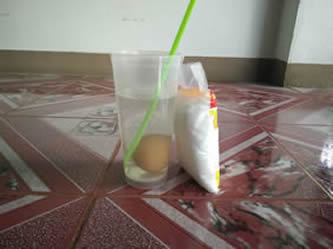

ไข่ไม่เสียลอยน้ำได้
ปกติแล้ว ไข่ที่เสียเท่านั้นที่จะลอยน้ำได้ เพราะในไข่เสียจะมีก๊าซ
ซัลเฟอร์ไดออกไซด์เกิดขึ้นภายในส่วนไข่ที่ไม่เสียหรือยังดีอยู่จะจมน้ำ เพราะน้ำหนักของไข่ทั้งฟองหนักกว่าน้ำนั่นเอง
แต่เราสามารถทดลองทำให้ไข่ที่ยังดีอยู่ลอยน้ำได้ ลองมาทดลองกันดู
โดยใช้กรดเกลือที่หาซื้อได้จากร้านขายยาทั่วไป นำกรดเกลือมา1 ส่วน ผสมกับธรรมดา 2 ส่วน คนให้เข้ากัน แล้วเทใส่ถ้วยแก้วขนาดใหญ่



นำไข่ไก่ที่ยังไม่เสียมาหนึ่งฟอง ลองทดสอบลอยโดยลอยไข่ในน้ำสะอาด ถ้าไข่ฟองนั้นดีจะจมทันที จากนั้นค่อยๆหย่อนไข่ลงไปในถ้วยแก้วที่มีกรดเกลือผสมกับน้ำสะอาด
เมื่อหย่อนไข่ลงไปแล้ว ไข่จะจมลงสู่ก้นแก้วทันที แต่สักครู่หนึ่ง ไข่ฟองนั้นจะค่อยๆลอยขึ้นมาเหนือผิวน้ำได้ ประหนึ่งว่ามีเวทมนตร์เรียกให้ไข่ลอยขึ้นมาได้ มันจะลอยเท้งเต้งอยู่อย่างนั้น ไม่จมกลับลงไปอีก

สรุปได้ว่า กรดเกลือที่ไปผสมน้ำสะอาด จะไปทำปฏิกิริยากับแคลเซียมคาร์บอเนต ซึ่งเป็นองค์ประกอบของเปลือกไข่ สิ่งที่เกิดขึ้นคือก๊าซคาร์บอนไดออกไซด์ ก๊าซดังกล่าวจะเกาะอยู่ที่ผิวเปลือกไข่ คอยช่วยพยุงให้เปลือกไข่ลอยขึ้นมา และพยุงตัวไม่ให้จมลงไปอีก